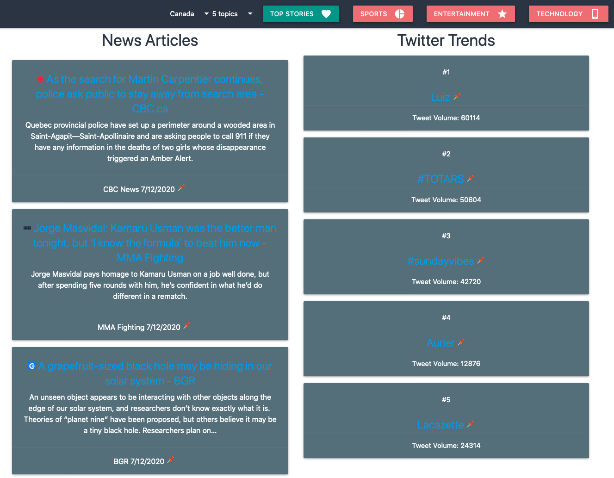
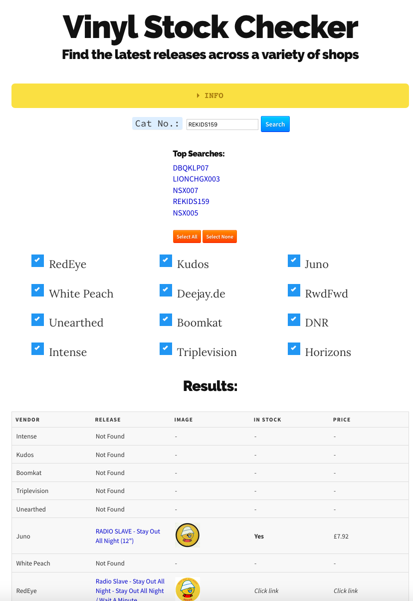
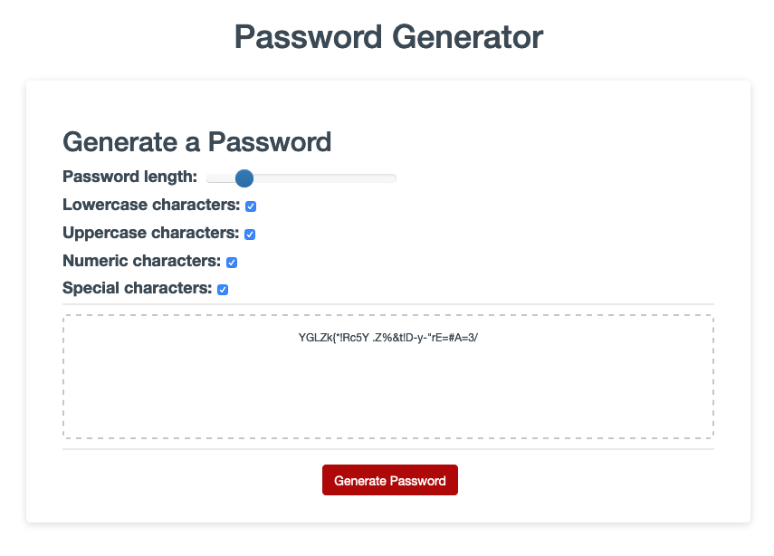

View my Resume
Selected Projects
- Trendinator: A collaboration between @adamwrites, @kambiz-frounchi, and myself. Fetches top news stories and twitter trends based on your location, or in the country of your choice. Allows filtering by category and saving stories or topics to a bookmarks area. Makes use of the NewsAPI and Twitter API. Materialize for styling, and jQuery for the code - also uses Luxon for dates.
→Repo

- Vinyl Stock Checker: A tool to search if a vinyl record by catalogue number in a variety of stores. Javascript / jQuery for the front end, Python + Flask for the back end.
→Repo

- Weather Dashboard: Get a 5-day forecast for any city in the world - the page also stores your favourite cities locally for future use. Makes use of the OpenWeatherMap API. Written using jQuery, with Luxon for time functions and Bootstrap for the layout.
→Repo

- Password Generator: A useful little tool to generate strong passwords. Written in plain JavaScript, making use of Bootstrap.
→Repo
